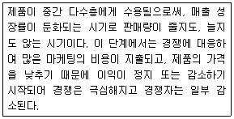
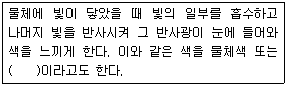
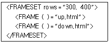

멀티미디어콘텐츠제작전문가 (2018-04-28 기출문제)
1과목: 멀티미디어개론
1. IPv6에 대한 설명으로 틀린 것은?
- 64Bit 주소 공간 제공
- 멀티캐스트를 위한 주소 공간 제공
- 유비쿼터스 통신장치들이 상호 통신할 수 있는 주소 공간 제공
- IPv4보다 향상된 데이터 보안성 제공
(정답률: 82%)

2. 리눅스 커널의 기능으로 틀린 것은?
- 프로세스 관리
- 디바이스 관리
- 파일 시스템 관리
- 웹 서비스 관리
(정답률: 65%)
3. 패킷을 전송할 때 소스 IP주소와 목적지 주소 값을 똑같이 만들어서 공격대상에게 보내는 서비스 거부 공격은?
- Targa Attack
- Trinoo Attack
- Smurf Attack
- Land Attack
(정답률: 73%)
4. H.264/MPEG-4 AVC 기술과 비교하여 약 1.5배 높은 압축률을 가지면서도 동일한 비디오 품질을 제공하는 고효율 비디오 코딩표준으로 H.265라고도 불리는 이 코딩 기술은?
- MPEG2
- AVC
- IESG
- HEVC
(정답률: 77%)
5. 대칭키 암호 시스템 중 블록 암호 방식이 아닌 것은?
- DES
- RSA
- SEED
- IDEA
(정답률: 75%)
6. UDP(User Datagram Protocol)에 대한 설명으로 틀린 것은?
- 비연결성 서비스 제공
- 사용자 데이터를 데이터그램에 포함해 전송
- 비신뢰성 서비스 제공
- 흐름제어 기능 제공
(정답률: 61%)
7. IP 주소 126.3.2.129는 어느 클래스에 속하는가?
- A클래스
- B클래스
- C클래스
- D클래스
(정답률: 57%)
8. 리눅스에서 프로세스를 복제하는 기능의 함수는?
- Create
- Fork
- Exec
- Memcopy
(정답률: 65%)
9. 웹과 인터넷 등의 가상 세계가 현실 세계에 흡수된 형태이며, 가상 세계 서비스로 “세컨드 라이프(Second Life)” 등이 대표적으로 기존의 가상현실(VR) 보다 진보된 개념은?
- AaaS
- Grid
- Metaverse
- Splogger
(정답률: 82%)
10. IPTV에서 사용되는 플랫폼 기술 중 실시간 채널에 대한 암호화 및 VOD 콘텐츠의 사전 암호화를 수행하는 것은?
- CAS (Conditional Access System)
- VS (Visual Search)
- MOC (Media Operation Core)
- TVod (Transactional Video on Demand)
(정답률: 70%)
11. 컴퓨터시스템을 구성하는 자원(프로세서, 메모리, I/O)을 필요한 만큼 독립적으로 구성하여 시스템을 유연하게 확대·축소할 수 있기 때문에 클라우드 컴퓨팅 환경에 적합한 시스템은?
- S-Index
- RIMM
- M-Safer
- Fabric Computing
(정답률: 71%)
12. 정보의 통계적인 확률을 이용하여 기호의 발생빈도가 높으면 짧은 부호를, 낮으면 긴 부호를 할당하여 평균 부호 길이가 최소가 되도록 하는 방식은?
- 객체 모델링 기법
- 색 참조 기법
- 메시지 다이제스트 기법
- 가변길이 부호화 기법
(정답률: 86%)
13. TCP/IP 계층에서 사용되는 프로토콜 중 응용계층에 해당하는 프로토콜이 아닌 것은?
- TELNET
- HTTP
- FTP
- TCP
(정답률: 65%)
14. 국내 전자상거래 및 금융 등에서 전송되는 중요한 정보를 보호하기 위해 국내 기술로 개발한 블록 암호 알고리즘은?
- DES
- RSA
- SEED
- RCA
(정답률: 73%)
15. 넷스케이프 사에서 개발한 프로토콜로서 응용계층과 트랜스포트 계층 사이에 위치하며, 안전한 연결과 압축·암호화를 담당하는 것은?
- HTTP
- HTTPS
- SSL
- TLS
(정답률: 68%)
16. 프로그램 솔루션으로 피그와 하이브가 있고, 구성요소로 분산파일 시스템과 맵리듀스 이외에 다양한 기능을 구성하는 시스템으로 구성되어 있으며, 대규모 데이터 처리가 필수적인 구글, 야후 등 대용량의 데이터 처리를 위해 개발된 오픈소스 소프트웨어는?
- Hadoop
- CCL
- SGML
- XML
(정답률: 76%)
17. IoT(Internet of Things)의 표준화와 가장 거리가 먼 것은?
- Agile Process Model
- Thread Group
- IEEE P2413
- OIC(Open Interconnect Consortium)
(정답률: 56%)
18. 운영체제에서 CPU를 사용 중인 상태에서 다른 프로세스가 CPU를 사용하도록 하기 위해, 이전 프로세스 상태를 보관하고 새로운 프로세스 상태를 적재하는 방법은?
- Deadlock
- Semaphore
- C-scan
- Context Switching
(정답률: 63%)
19. 인간의 입과 같이 작은 음원에서 나오는 음이 그 음원 가까이에서는 대단히 강한 충격적인 음압과 구면파 효과에 의해 저주파음이 강조되는 현상은?
- 양의효과
- 근접효과
- 청감곡선
- 마스킹 현상
(정답률: 75%)
20. 동일한 콘텐츠를 PC, 스마트TV, 스마트폰, 태블릿 PC 등 다양한 디지털 정보기기에서 자유롭게 이용할 수 있는 서비스는?
- NFC
- Bluetooth
- Trackback
- N-Screen
(정답률: 76%)
2과목: 멀티미디어기획및디자인
21. 가법혼색의 3원색 RGB 색상을 각각 100% 혼합하여 나타나는 컬러를 웹 컬러 숫자(Web Color Number)로 바르게 표현한 것은?
- #FFFFFF
- #000000
- #999999
- #333333
(정답률: 76%)
22. 다음은 제품 수명 주기의 단계에서 어느 시기인가?

- 도입기(Introduction Stage)
- 성장기(Growth Stage)
- 성숙기(Maturity Stage)
- 쇠퇴기(Decline Stage)
(정답률: 78%)
23. 색채 표준의 조건 중 거리가 먼 것은?
- 색채는 규칙적인 단계별 배열이 있어야 한다.
- 색상을 배열할 때에는 주관적 근거에 의해 색상·명도·채도 등의 속성을 배열하여야 한다.
- 색 재현이 쉽고 해독하기 쉬워 실용적이어야 한다.
- 배열된 색채 간에는 지각적 등보성이 있어야 한다.
(정답률: 70%)
24. 다음 중 래스터 방식의 파일 포맷 형식이 아닌 것은?
- EPS
- JPEG
- GIF
- PNG
(정답률: 76%)
25. E-Commerce 모델에 대한 설명으로 적합하지 않은 것은?
- E-mail을 무료로 주어 회원을 대상으로 하는 모델이다.
- 전자상거래 방식의 기본 모델형 이라고 볼 수 있다.
- 인터넷 비즈니스와 함께 주로 사용되는 형태이다.
- 그 종류로는 B to B, B to C, C to C와 같은 모델이 있다.
(정답률: 73%)
26. 은유의 의미를 내포하는 단어로 사용자가 접근하려는 인터페이스 환경을 쉽게 이해하도록 익숙한 개념적 모델을 제공하기 위해 이용되는 것은?
- 그리드
- 가이드
- 레이아웃
- 메타포
(정답률: 70%)
27. 다른 컬러에 비해 주목성이 가장 강한 컬러로 사용자에게 약간의 흥분을 유도하는 색상은?
- 노란색
- 파란색
- 녹색
- 빨간색
(정답률: 82%)
28. 멀티미디어 디자인에서 웹 페이지의 시각적 요소들에 대한 설명으로 틀린 것은?
- 배경, 레이아웃 아이콘, 헤더 등에서 이미지와 색채를 일관성 있게 사용해야 한다.
- 텍스트 사용에서 브라우저상에서 표현할 수 있는 글자체에는 한계가 있기 때문에 모든 텍스트를 그래픽 문자로 사용하는 것이 바람직하다.
- 웹 페이지에서 색은 그 페이지의 전체적인 분위기를 좌우하는 만큼, 그 페이지의 주제나, 내용과 연관성 있는 색을 선택한다.
- 사용자의 연상이나 경험과 관련된 시각 메타포(Metaphor)를 사용하여 이해도를 높인다.
(정답률: 81%)
29. 대표적인 아이디어 발상기법의 하나로 5~7명의 집단이 최적이며, 일정한 규칙을 지켜가며 전원이 자유롭게 의견을 내는 기법은?
- 자유연상법
- 유비법
- 브레인스토밍
- 전문가시스템
(정답률: 79%)
30. 물체의 경계면의 픽셀을 물체의 색상과 배경의 색상을 혼합해서 표현함으로써 물체의 경계면을 부드럽게 보이게 하는 방법을 무엇이라 하는가?
- 레터링
- 디더링
- 그라데이션
- 앤티앨리어싱
(정답률: 73%)
31. 잡지 광고디자인에 대한 설명으로 거리가 가장 먼 것은?
- 특정한 독자층을 갖고, 회람률이 높아 발행 부수 몇 배의 독자를 갖는다.
- 광고의 메시지를 오래 기억하며, 자세한 내용을 전달할 수 있어 후광효과를 기대할 수 있다.
- 반복률과 보존율이 높아 매체로서의 생명이 길고 컬러 인쇄 효과가 좋아 소구력이 강하다.
- 영상과 음향의 복합전달에 유용하며 일련의 움직임이나 흐름을 구체적으로 표현할 수 있다.
(정답률: 77%)
32. 복잡한 문자 명령어를 익히지 않아도 키보드나 마우스를 사용하여 메뉴나 아이콘 선택으로 수행되는 사용자 인터페이스 방식은?
- Mapping
- Hypermedia
- Format
- GUI
(정답률: 77%)
33. 다음 ( ) 안에 알맞은 용어는 무엇인가?

- 자연색
- 인공색
- 표면색
- 천연색
(정답률: 72%)
34. CIE L*a*b* 색좌표계에서 b*에 해당되는 색의 영역으로 옳은 것은?
- Red ~ Green
- Yellow ~ Blue
- Black ~ Red
- White ~ Green
(정답률: 73%)
35. 미디어의 유형별 분류 중 미디어의 지각 매체(Perception Medium)에 해당하지 않는 것은?
- 미각
- 시각
- 청각
- 촉각
(정답률: 74%)
36. 사운드 편집 소프트웨어에 해당하지 않는 것은?
- Painter
- GoldWave
- Audition(Cool Edit Pro)
- Creative Wave Studio
(정답률: 82%)
37. 화면으로 출력되는 멀티미디어 콘텐츠를 위한 색상 모드의 기본 색으로 적절치 않은 것은?
- 빨강
- 노랑
- 녹색
- 파랑
(정답률: 79%)
38. 타이포그래피(Typography)에 대한 설명으로 거리가 가장 먼 내용은?
- 글자라는 의미의 그리스어 Typowriter에서 유래되었다.
- 글자를 이용한 디자인으로 예술과 기술이 합해진 영역이다.
- 글자체, 글자 크기, 글자 사이, 글줄 사이, 여백 등을 조절하여 전체적으로 읽기에 편하도록 구성하는 표현 기술이다.
- 전통적으로 활판 인쇄술을 의미했으나 현대에서는 기능과 미적인 면에서 효율적으로 운용하는 기술이나 학문으로 통용되고 있다.
(정답률: 66%)
39. 다음 중 특정 대상인 기업, 회사, 단체, 제품 행사 등을 특징 있게 나타낼 수 있는 시각적인 상징물을 무엇이라고 하는가?
- 카툰(Cartoon)
- 캐릭터(Character)
- 캐리커처(Caricature)
- 컷(Cut)
(정답률: 81%)
40. 인간이 볼 수 있는 빛의 파장 영역 중 색 자극으로 작용하는 380~780nm의 영역은?
- 반사영역
- 감성영역
- 가시광선영역
- 단색영역
(정답률: 81%)
3과목: 멀티미디어저작
41. 데이터의 구조, 정의, 변경, 삭제 시 사용하는 SQL이 아닌 것은?
- ALTER
- CREATE
- DEL
- DROP
(정답률: 55%)
42. XML 문서의 처리방법으로 이벤트 기반의 처리 방식을 제공하는 것은?
- SAX
- XSL
- CSS
- SOAP
(정답률: 44%)
43. 다음 HTML 코드에서 프레임을 분할하려고 할 때 ( ) 안에 공통으로 들어갈 태그는?

- cols
- li
- map
- src
(정답률: 51%)
44. 자바스크립트에서 정수형 데이터를 가지는 num 변수를 선언하려고 할 때 옳은 것은?
- Int num;
- Float num;
- Var num;
- Number num;
(정답률: 71%)
45. 데이터베이스 릴레이션에 대한 설명으로 틀린 것은?
- 파일구조에서 레코드와 같은 의미이다.
- 한 릴레이션에 포함된 튜플 사이에는 순서가 없다.
- 한 릴레이션을 구성하는 애트리뷰트 사이에는 일정한 순서가 있다.
- 애트리뷰트의 값은 원자값이다.
(정답률: 56%)
46. 자바스크립트의 Boolean 객체 메서드로 맞는 것은?
- toSource()
- concat()
- pop()
- reverse()
(정답률: 41%)
47. XML에서 XSL-FO 문서의 구성부분이 아닌 것은?
- fo:layout-master-set
- fo:footer-layer
- fo:declarations
- fo:page-sequence
(정답률: 45%)
48. HTML5의 Select 태그에서 여러 개의 목록을 선택하고 싶을 때 사용하는 속성은?
- Color
- Multiple
- Display
- Input
(정답률: 85%)
49. 관계형 데이터베이스에서 뷰(View)에 대한 설명으로 틀린 것은?
- 데이터의 접근을 제어하게 함으로써 보안을 제공한다.
- 다른 뷰의 정의에 사용될 수 있다.
- 물리적인 테이블로 관리가 편하다.
- 뷰가 정의된 기본 테이블이 제거되면 뷰도 자동으로 제거된다.
(정답률: 56%)
50. 데이터베이스에서 Foreign Key와 관련된 옵션 중 Master 삭제 시 해당 값을 NULL로 세팅하는 것은?
- Cascaded Option
- Restricted Option
- Trigger Option
- Nullified Option
(정답률: 73%)
51. HTML5에서 DOM 내의 특정 노드를 검색하는 방법이 아닌 것은?
- DOM 노드의 id 속성에 지정된 값
- DOM 노드의 태그 이름에 지정된 값
- DOM 노드의 class 속성에 지정된 값
- DOM 노드의 함수 name 속성에 지정된 값
(정답률: 61%)
52. 다음 중 자바스크립트 변수로 사용할 수 있는 것은?
- Transient
- Super
- Xinter
- Try
(정답률: 52%)
53. 객체의 데이터와 함수를 하나로 묶어서 블랙박스화 하여 외부의 접근을 제한하는 객체 모델 개념은?
- 상속
- 다형성
- 캡슐화
- 인스턴스
(정답률: 79%)
54. HTML5의 WebSocket 객체에서 발생하는 이벤트에 해당하지 않는 것은?
- onOpen
- onMessage
- onErrorhandlemessage
- onClose
(정답률: 69%)
55. DTD 명세를 확장하고 개선한 것으로, XML 문서의 내용과 구조를 정의하기 위해 사용하는 것은?
- XLS
- XML Schema
- XPath
- SCOPE
(정답률: 64%)
56. HTML에서 FRAME 태그 속성에 대한 설명으로 틀린 것은?
- “cols”는 Frame의 색상을 지정할 때 사용한다.
- “src”는 브라우저 url 주소로 다른 HTML 문서를 읽어 온다.
- “target”은 Frame에 붙일 이름의 파일을 표시한다.
- “border”는 Frame 테두리의 굵기를 나타낸다.
(정답률: 55%)
57. Jquery에서 마우스가 선택영역에 오버되거나 아웃 될 때 각각의 함수를 실행하는 것은?
- reset( )
- dbclick( )
- hover( )
- focus( )
(정답률: 69%)
58. 객체지향분석과 설계를 위한 통합 모델링 언어인 UML에서 사실상 객체지향방법론의 중심이며, 시스템 내 객체타입과 그들 사이에 존재하는 여러 가지 정적인 관계를 설명하는 다이어그램은?
- 클래스 다이어그램
- 쓰임새 다이어그램
- 객체 다이어그램
- 컴포넌트 다이어그램
(정답률: 39%)
59. 자바스크립트에서 주어진 값이 문자이면 참(true), 숫자이면 거짓(false)값을 반환하는 함수는?
- eval( )
- parseInt( )
- isNaN( )
- escape( )
(정답률: 64%)
60. HTML5의 특징으로 거리가 먼 것은?
- 시맨틱(Semantic) 마크업을 표현할 수 있다.
- 더 높은 접근성과 호환성을 가질 수 있다.
- 크로스 브라우징과 연관 없다.
- 웹 어플리케이션 개발을 위한 풍부한 API를 제공한다.
(정답률: 75%)
4과목: 멀티미디어제작기술
61. 색의 파장이 다른 여러 단색광이 모두 같은 에너지를 가진다고 해도 눈은 그것을 같은 밝기로 느끼지 않는다. 이런 특성을 무엇이라 하는가?
- 명암의 순응도 특성
- 색순응도 특성
- 시감도 특성
- 비시감도 특성
(정답률: 49%)
62. 원하는 소리의 음색을 위해 주파수 특성을 조정하는 시그날 프로세서는?
- 컴프레서(Compressor)
- 이퀄라이저(Equalizer)
- 익스팬더(Expander)
- 리미터(Limiter)
(정답률: 69%)
63. 다음 중 동영상 코덱(CODEC)이 아닌 것은?
- MPEG-1
- Intel Indeo
- WinRAR
- DivX
(정답률: 66%)
64. 디지털 카메라의 성능을 결정하는 중요한 요소로서 촬영된 사진의 해상도나 화질을 결정하는 것은?
- COM
- CRT
- CCD
- LCD
(정답률: 54%)
65. 래스터(Raster) 방식 이미지에 대한 설명으로 옳지 않은 것은?
- 점, 곡선과 같은 기하학적인 객체로 표현된다.
- 파일 포맷으로 BMP, JPEG, GIF 등이 있다.
- 파일의 크기는 해상도에 비례한다.
- 픽셀 단위로 정보가 저장된다.
(정답률: 66%)
66. 애니메이션을 제작하는데 있어서 애니메이터는 장면이 변화하는 키 프레임(Key Frame)만을 제작하고, 중간에 속해 있는 프레임들은 컴퓨터가 자동으로 생성하는 기능은?
- 플립북 애니메이션(Flip Book Animation)
- 셀 애니메이션(Cell Animation)
- 스프라이트 애니메이션(Sprite-Based Animation)
- 트위닝(Tweening)
(정답률: 75%)
67. 초당 사운드 파형의 반복 횟수를 의미하며, 소리의 높고 낮음을 결정하는 것은?
- 진폭
- 파장
- 속도
- 주파수
(정답률: 61%)
68. 비디오 편집 기법에서 서로 다른 비디오 클립 A와 B를 이어서 재생할 때, 연결 부분에 여러 가지 효과를 주어 화면이 자연스럽게 바뀌도록 하는 기법은?
- 수퍼임포즈(Superimpose)
- 모션(Motion)
- 필터(Filter)
- 트랜지션(Transition)
(정답률: 77%)
69. 렌즈를 통해 들어온 강한 빛이 카메라 내부에서 난반사를 일으켜 화상에 연속적인 조리개 무늬나 광원 모양의 허상이 맺히는 현상은?
- 모아레(Moire)
- 디포메이션(Deformation)
- 플레어(Flare)
- 일루젼(Illusion)
(정답률: 71%)
70. 영상압축 기술의 용도를 잘못 설명한 것은?
- JPEG : 정지 화상 전송
- H.261 : 영상회의, 원격 강의
- MPEG-1 : Video CD 제작
- MPEG-2 : 인터넷 방송 제작
(정답률: 57%)
71. 비디오 소스로부터 한 장면만을 캡처 받는 것으로 스냅샷을 찍는 것과 같은 효과를 얻을 수 있는 기법은?
- 타임랩스 캡처(Time Laps Capture)
- 배치 캡처(Batch Capture)
- 매뉴얼 캡처(Manual Capture)
- 스틸 캡처(Still Capture)
(정답률: 76%)
72. 3차원 모델링 요소 중 그 성격이 다른 하나는?
- 스플라인(Spline) 모델
- 넙스(Nurbs) 모델
- 패치(Patch) 모델
- 솔리드(Solid) 모델
(정답률: 51%)
73. 색의 3요소에서 색이 갖고 있는 밝기를 나타내는 것은?
- Tone
- Hue
- Luminance
- Saturation
(정답률: 59%)
74. 녹음테이프를 재생할 대 발생하는 자기테이프를 특유의 자체 잡음을 가리키며 녹음되어 있는 내용에 관계없이 일정한 레벨로 나타나는 잡음은?
- 히스잡음
- 핑크잡음
- 왜곡(디스토션) 잡음
- 백색잡음
(정답률: 59%)
75. 소음에 의해 음성의 명료도가 저하되는 현상은?
- 간섭
- 피치
- 마스킹
- 클리핑
(정답률: 57%)
76. MPEG-2의 압축방법으로 거리가 가장 먼 것은?
- 허프만 코딩(Huffman Coding)
- RLE(Run Length Encording)
- DCT
- H.261
(정답률: 43%)
77. 사운드 파형을 그대로 표현하는 웨이브(Wave) 방식을 사용하는 파일 종류로 거리가 먼 것은?
- AU
- MOD
- WAV
- AIFF
(정답률: 59%)
78. 빛의 간섭효과가 만드는 간섭무늬를 이용하여 3차원의 실 물체 영상을 기록·재생하는 기술로 복제방지용 신용 카드, 소프트웨어 보호, 주류 포장 등에 많이 사용되는 것은?
- 홀로그램(Hologram)
- 슈퍼그래픽(Super Graphic)
- 컴퓨터그래픽(Computer Graphic)
- 일러스트레이션(Illustration)
(정답률: 82%)
79. 컬러모델(Color Model)에 대한 설명으로 틀린 것은?
- 컬러모델은 특정 상황 안에서 컬러의 특징을 설명하기 위한 방법이다.
- 컬러의 특성을 표현하기 위하여 한 종류의 컬러 모델을 정의하여 사용한다.
- 컬러모델의 종류에는 RGB, CMY, HSV 모델 등이 있다.
- 실제로 적용할 때는 CMY 보다는 CMYK 모델을 더 사용한다.
(정답률: 52%)
80. 사람이 움직이는 동작을 데이터로 이용하기 위하여 인간이나 동물의 움직임을 디지털 코드화하는 기법은?
- 프랙탈
- 모션캡쳐
- 래디오시티
- 모핑
(정답률: 79%)